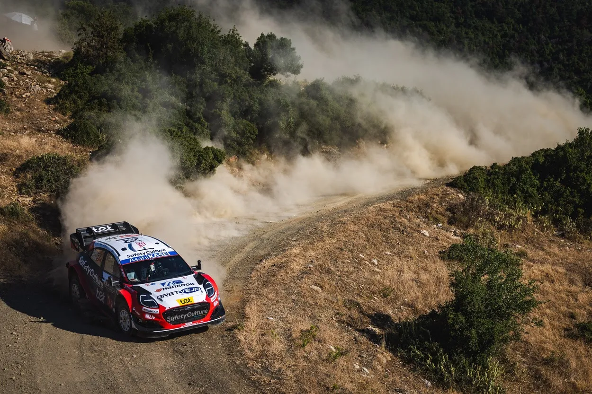
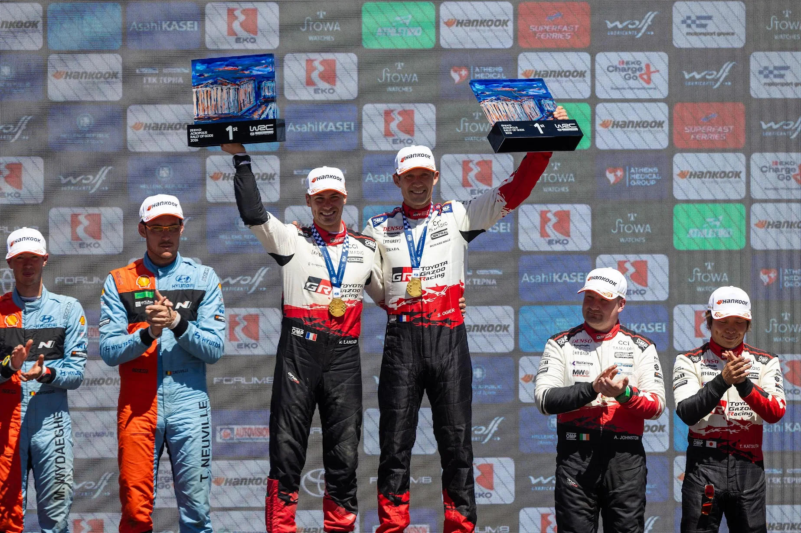
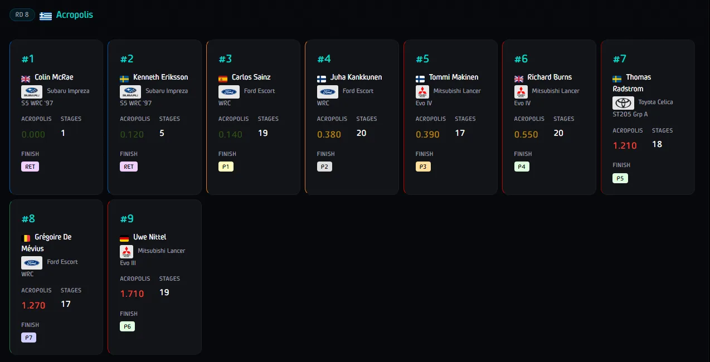
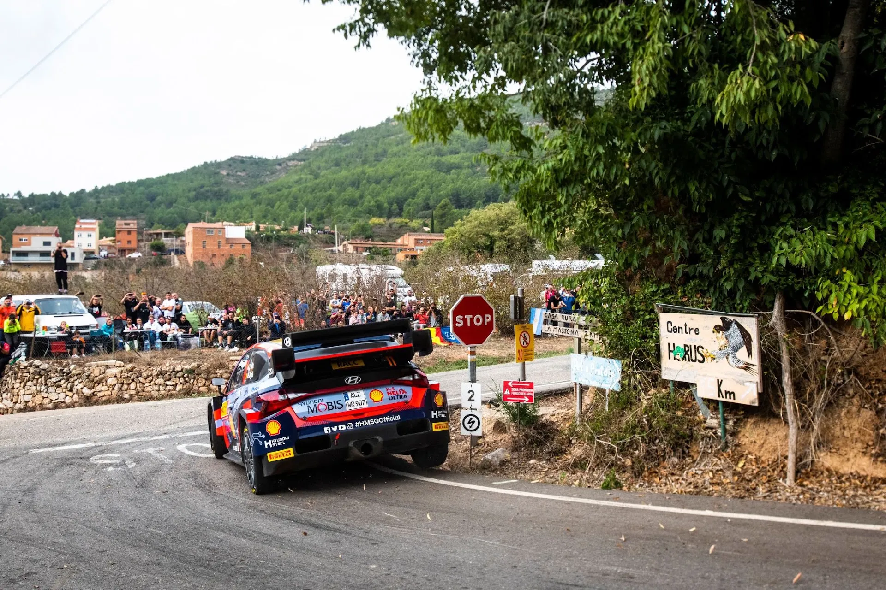
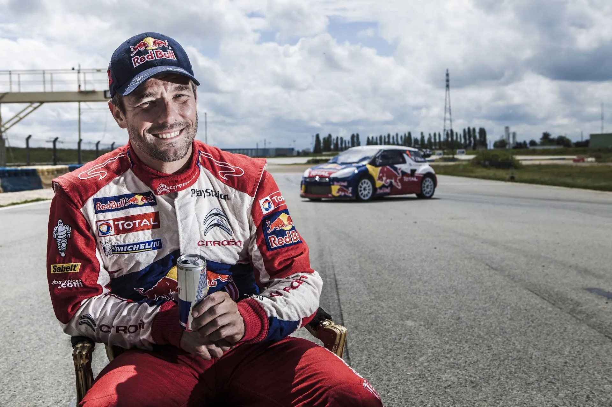
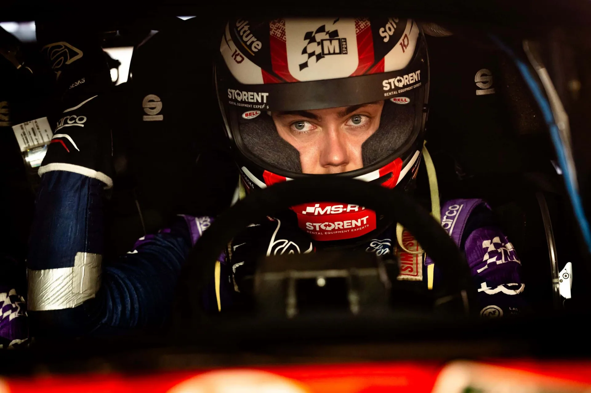

How often does the fastest driver actually win in the WRC?
Cover: Zenor Designs
Thumbnail: Acropolis Rally Gallery
How often does the fastest driver in a rally actually win in the end? It's a simple question, but it's quite tricky when you think about it. Is the winner always the fastest in a rally? How has this changed through the years? Are there drivers who consistently overachieved or underachieved relative to their raw speed? In other words, who converted outright pace into victories better than expected, and who was often among the fastest but failed to get the results their speed deserved? These are all valid questions, that I will attempt to answer in this post.
Quantifying raw pace can be quite difficult, as there's no absolute metric that can undeniably do that, at least in the world of the WRC. The more variables there are, the more difficult that becomes. I find that more "traditional" metrics like looking at the end of season standings, or the total amount of stage wins in a season don't tell the full story. Rally results are just a snapshot of what occurred within the rally, and the total stage wins are not a fully representative metric, as rallies don't always have the same amount of tests in them.

This is why I used my own ideal pace data that I have collected, looking back at every WRC event from 1994 to present day. With 422 rallies, this database covers 62% of all WRC events held, and contains data from more than 200 drivers that competed in that time period. All data has been collected by me, using the times provided by eWRC-results, and has been manually scanned to discard stage times were drivers faced an issue or an occurrence that hindered them, may that be a puncture, a crash, or something more simple like changeable weather. For more information, please feel free to check out the full database here: https://www.powerslideblog.com/stats
So without further ado, let's try to answer this question!
Hold on, how can we know who the fastest driver was in an event?
That is a very good question. Truly, we can't always tell with certainty who the fastest driver would be in an event, especially if they completed less than the total distance. However, for this post, we'll consider a driver who competed at least 40% of the total distance of an event, and was also the one with the lowest seconds per kilometer deficit as the fastest driver in that rally. You might ask why 40 and not 50%. I think 40% is a better cut-off, as it helps a bit with the years before the super-rally rules were introduced.
Lets see an example of this, lets look at the 1997 Acropolis Rally.

As you can see, Colin McRae won the rally's opening stage, and then failed to complete any other stages with a representative time. Kenneth Eriksson too rolled out of the rally after SS5 from the lead. The two Subarus were fast, but don't meet the required distance to be considered for this comparison, and are therefore ignored. Carlos Sainz was therefore the fastest driver, matching his finishing position.
How often does the fastest driver actually win in the WRC?
According to my data, the fastest driver in a rally goes on to win the event 62.6% of the time in the World Rally Championship. Across all rallies in my dataset, the fastest driver and the eventual winner were the same on 264 occasions. The fastest driver goes on to finish on the podium 73.5% of the time, and retires, or doesn't score points a further 17.8% of the time.
When the fastest driver is not able to win, second place is there to pick up the pieces, with second fastest winning 24% of the time, with the rest of the winners coming from 3rd to 7th fastest.
What is noteworthy is that the most common finishing position isn't always the same as the one from the pace ranking, meaning that for example the fourth fastest driver doesn't most oftenly finish in 4th place. This irregularity becomes more apparent on the lowest places in the top 10, with the slower drivers retiring more often.
Is this percentage the same across all rallies and surfaces?
As you can imagine, this percentage varies depending on the speed and roughness of an event, with the surface not being as important. Tarmac rallies have the fastest driver win 63.6% of the time, whereas gravel ones see the fastest driver win 59.8% of the time.
Where things become interesting is where we compare rallies of similar character, even if the surface is different. Rally Finland, Rally Catalunya and Rally New-Zealand are all generally high-speed rallies, held in different surfaces. At the same time, it wouldn't be outlandish to claim that all three of them are on the smoother side. In Finland, the fastest driver has won the rally 23 times in 30 editions, meaning that "the right driver won" 76.7% of the time. In Catalunya, the percentage is slightly smaller, but still above average, with the fastest driver winning 70.4% of the time. New Zealand has an even higher percentage, with the fastest driver winning 76.5% of the time.
By contrast, if we compare events of attrition (rough gravel or dirty tarmac rallies), we'll see a similar correlation. Rallies like Turkey or Cyprus see the fastest driver win 33% and 28% of the time, a substantial decrease from the average, with tarmac rallies like Croatia seeing a 40% win rate.

Fast and smooth rallies give more predictable rallies in terms of winning rates, no matter the surface
Jaanus Ree / Red Bull Content Pool
Has this trend been the same across all eras?
The answer here is that changes to the trend depend on how competitive a season was, regardless of the era it took place. Seasons where the championship was hotly contested, and the field was close together, the percentage of fastest drivers actually winning was less than the average. Some examples include 2003 and 2011, where the fastest driver was the winner only 43 and 37% of the time across the season. A more recent example of this can be seen in 2024, where multiple instances of crashes from Sebastien Ogier and Kalle Rovanpera, brought the winning rate of the fastest driver down to just 31%.
By contrast, seasons dominated by a single driver or manufacturer tend to give more predictable results. Look no further than seasons dominated by Sebastien Loeb like 2005 and 2010, where the winning rate of the fastest driver was 75 and 85%, mostly due to the Frenchman's consistency. This pattern can also be seen in seasons dominated by Sebastien Ogier, with 2014 having a winning rate of 77%.

Seasons that were dominated by a single driver were more predictable in terms of winning rate by the fastest driver
Flavien Duhamel / Red Bull Content Pool
What are some interesting outliers?
While compiling this post, I found some interesting tidbits that I would like to share with you. I found some interesting one-time theoretical winners. Some of them include:
- Bruno Thiry - Tour de Corse 1995
- Chris Atkinson - Rally Australia 2005
- Per Gunnar Anderson - Rally Sweden 2011
- Martins Sesks - Rally Saudi Arabia 2025
Thiry lost a win in heartbreaking fashion in Corsica 1995 after suffering a mechanical issue from the lead. Chris Atkinson led early on in Australia 2005, but damaged his suspension, dropping back. PG Andersson was the fastest driver in a very competitive Rally Sweden in 2011, but went off the road multiple times. Martins Sesks was the fastest in last year's season finale before retiring.
Another very interesting point that came from my data, is that no driver has won a rally while being lower than 7th fastest on pace. Even then, from 422 rallies, the seventh fastest driver has only won on three occasions. All of them were in some way due to extreme circumstances. These are:
- Mikko Hirvonen - Acropolis Rally 2009
- Mads Ostberg - Rally Portugal 2012
- Takamoto Katsuta - Safari Rally Kenya 2026
Hirvonen won after incidents wiped out Sebastien Loeb, Dani Sordo, Jari-Matti Latvala and Petter Solberg, with the Finn protecting his lead for almost the whole of Saturday and Sunday. Mads Ostberg won in Portugal following Hirvonen's disqualification in a wet and muddy rally, that was absolutely chaotic, and Takamoto Katsuta was virtually the only driver to stay out of trouble in this year's Safari Rally.

Martins Sesks is one of many "what could have been" drivers that I found in the database
Are there notable instances of drivers being over or underachievers?
As one can expect, this way of measuring pace looks upon drivers that were historically less consistent favorably. For example, Jari-Matti Latvala was the fastest driver 29 times in his career, the Finn ended up winning only 13 of these rallies, with the majority of these 16 lost wins coming due to his mistakes.
By contrast, drivers who achieved good results due to mostly being consistent, like Mikko Hirvonen, Elfyn Evans and Carlos Sainz (at least since 1994) are deemed as massive overachievers, with Hirvonen for example only being the fastest in six rallies in that time period. He won all but one of them, losing out on a win in Finland 2011 after going off the road and sustaining damage on day 1.
Sebastien Loeb has a fantastic winning rate in rallies where he was the fastest in, winning 82.1% of the time, while retiring just 3.8% of the time. By contrast, Sebastien Ogier has a winning rate of 73.7%, retiring from 15.8% of the rallies he was the fastest in. Kalle Rovanpera has identical numbers.
Conclusion
So in the end, what can we take from all of this? Well, we can definitely agree that the data verifies what most of us had in mind, the fastest driver doesn't always win in the WRC. We can also tell that a rally can be more predictable more so based on its character, not just its surface. Nevertheless, it's evident that being fast simply doesn't guarantee a win in the championship, with so many variables in rallying, there's so many things that can go wrong and the drivers who manage to minimise the effect of those variables, more often than not, are the ones that end up lifting the trophy on Sunday.


Comments